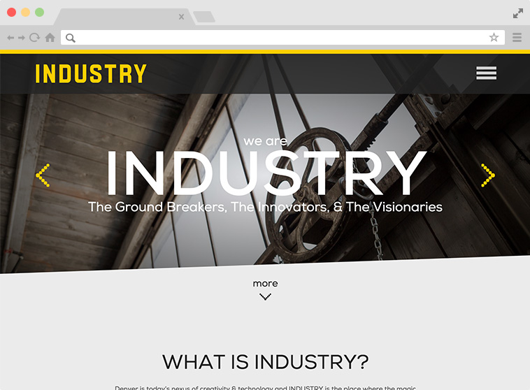

Industry Denver
Role: Lead Dev.
Employed newer cutting edge CSS3 tactics for things like the angled bit towards the top and the navigation. Utilized custom post types to allow for easy management of tenants and their individual pages. Empowered the client to be able to feature and manage events and empower users on desktop and mobile to make it easier to find companies within Industry.
See the site.